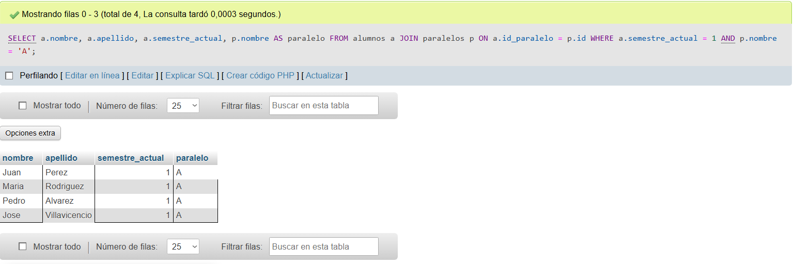
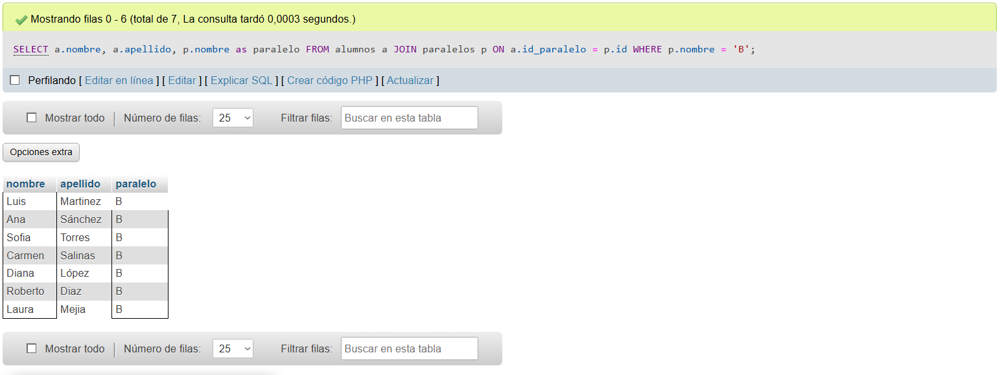
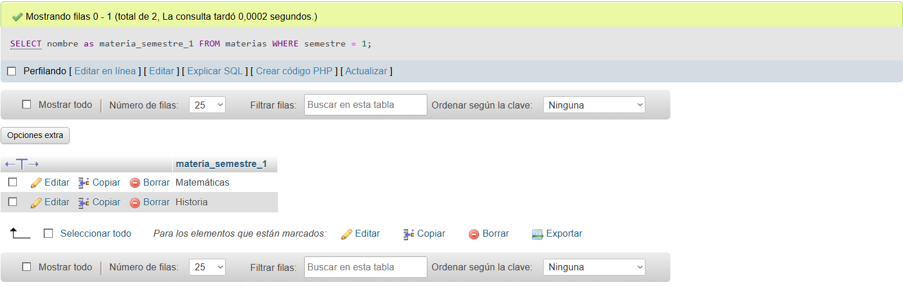
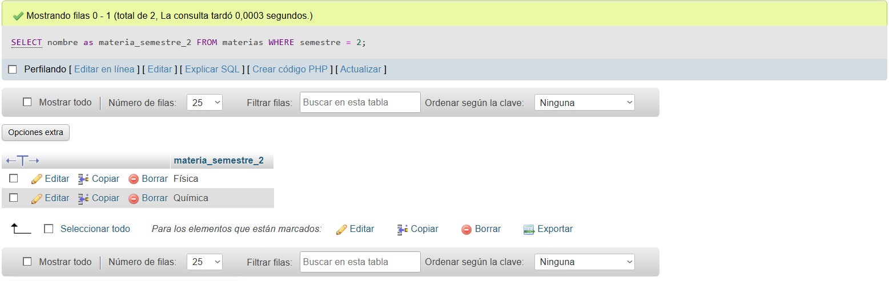
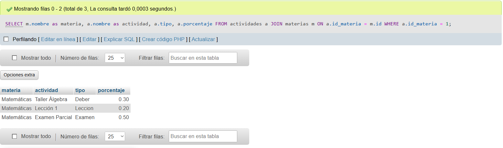
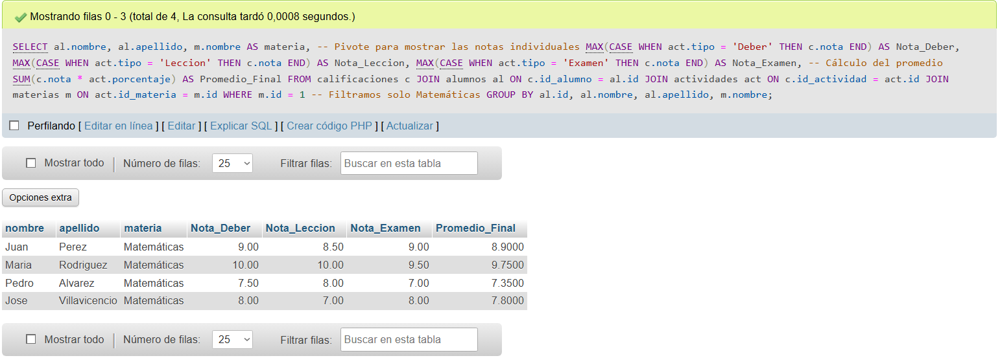
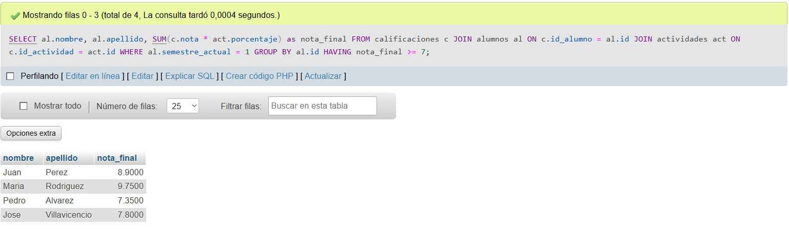
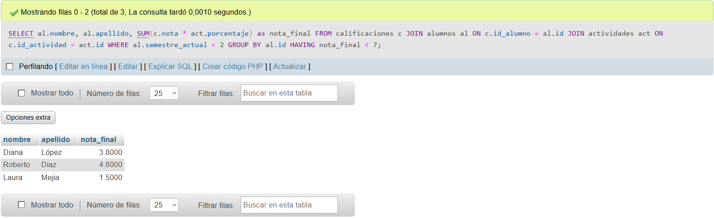

1. Configuración Inicial y Estructura
Script de Creación
Para garantizar resultados consistentes en las consultas (mínimo 3 registros por caso), se diseñó un script "todo en uno".
Este script crea la estructura relacional (Alumnos, Materias, Notas, etc.) e inserta datos estratégicamente pensados para probar escenarios de aprobación y reprobación.
-- ==========================================================
-- 1. CREACIÓN DE TABLAS (ESTRUCTURA)
-- ==========================================================
CREATE TABLE paralelos (
id INT PRIMARY KEY, nombre VARCHAR(5)
);
CREATE TABLE docentes (
id INT PRIMARY KEY, nombre VARCHAR(50), apellido VARCHAR(50)
);
CREATE TABLE alumnos (
id INT PRIMARY KEY, nombre VARCHAR(50), apellido VARCHAR(50),
semestre_actual INT, id_paralelo INT,
FOREIGN KEY (id_paralelo) REFERENCES paralelos(id)
);
CREATE TABLE materias (
id INT PRIMARY KEY, nombre VARCHAR(50), semestre INT,
id_docente INT, FOREIGN KEY (id_docente) REFERENCES docentes(id)
);
CREATE TABLE actividades (
id INT PRIMARY KEY, nombre VARCHAR(50), tipo VARCHAR(20),
porcentaje DECIMAL(4,2), id_materia INT,
FOREIGN KEY (id_materia) REFERENCES materias(id)
);
CREATE TABLE calificaciones (
id INT PRIMARY KEY AUTO_INCREMENT, nota DECIMAL(4,2),
id_alumno INT, id_actividad INT,
FOREIGN KEY (id_alumno) REFERENCES alumnos(id),
FOREIGN KEY (id_actividad) REFERENCES actividades(id)
);
-- ==========================================================
-- 2. INGRESO DE DATOS ESTRATÉGICOS (Resumen)
-- ==========================================================
-- Se insertaron 12 alumnos y notas para asegurar resultados.
INSERT INTO paralelos VALUES (1, 'A'), (2, 'B');
INSERT INTO docentes VALUES (1, 'Roberto', 'Gomez'), (2, 'Laura', 'Vargas'),
(3, 'Esteban', 'Quito');
INSERT INTO materias VALUES (1, 'Matemáticas', 1, 1), (2, 'Historia', 1, 2),
(3, 'Física', 2, 3), (4, 'Química', 2, 2);
-- Insertamos 13 Alumnos (distribuidos en semestres y paralelos)
INSERT INTO alumnos VALUES
(1, 'Juan', 'Perez', 1, 1), (2, 'Maria', 'Rodriguez', 1, 1),
(3, 'Pedro', 'Alvarez', 1, 1), (4, 'Jose', 'Villavicencio', 1, 1),
(5, 'Luis', 'Martinez', 1, 2), (6, 'Ana', 'Sánchez', 1, 2),
(7, 'Sofia', 'Torres', 1, 2), (8, 'Carmen', 'Salinas', 1, 2),
(9, 'Carlos', 'Ruiz', 2, 1), (10, 'Elena', 'Mora', 2, 1),
(11, 'Diana', 'López', 2, 2), (12, 'Roberto', 'Diaz', 2, 2),
(13, 'Laura', 'Mejia', 2, 2);
Diagrama Relacional
Visualización gráfica del esquema de la base de datos. Se muestran las tablas Alumnos, Docentes, Materias y Calificaciones con sus respectivas relaciones (Claves Foráneas).
Este modelo permite entender cómo se vinculan las notas con las actividades y los estudiantes.
Esquema E-R (Entidad Relación)

2. Consultas Realizadas
A continuación se presentan las 8 consultas SQL solicitadas, mostrando el código utilizado y la evidencia del resultado en la base de datos.
01 1er Semestre - Paralelo A
Mostrar todos los alumnos que se encuentran en primer semestre y pertenecen al paralelo A. Se requiere unir la tabla de alumnos con la de paralelos.
SELECT a.nombre, a.apellido, a.semestre_actual, p.nombre AS paralelo
FROM alumnos a
JOIN paralelos p ON a.id_paralelo = p.id
WHERE a.semestre_actual = 1
AND p.nombre = 'A';Resultado en Pantalla

02 Estudiantes Paralelo B
Mostrar todos los estudiantes que están inscritos en el paralelo B, independientemente de su semestre.
SELECT a.nombre, a.apellido, p.nombre as paralelo
FROM alumnos a
JOIN paralelos p ON a.id_paralelo = p.id
WHERE p.nombre = 'B';Resultado en Pantalla

03 Materias 1er Semestre
Listar los nombres de las materias que se imparten actualmente en el primer semestre.
SELECT nombre as materia_semestre_1
FROM materias
WHERE semestre = 1;Resultado en Pantalla

04 Materias 2do Semestre
Listar los nombres de las materias que se imparten actualmente en el segundo semestre.
SELECT nombre as materia_semestre_2
FROM materias
WHERE semestre = 2;Resultado en Pantalla

05 Actividades de una Materia
Mostrar todas las actividades evaluativas definidas para una materia específica (Ej: Matemáticas, ID 1), incluyendo su tipo y porcentaje.
SELECT m.nombre as materia, a.nombre as actividad, a.tipo, a.porcentaje
FROM actividades a
JOIN materias m ON a.id_materia = m.id
WHERE a.id_materia = 1;Resultado en Pantalla

06 Promedio Final Detallado
Consulta Compleja: Calcula el promedio final ponderado (SUM de nota * porcentaje). Además, utiliza una técnica de "pivoteo" condicional (CASE WHEN) para mostrar las notas de Deber, Lección y Examen en columnas separadas en la misma fila.
SELECT al.nombre, al.apellido, m.nombre AS materia,
-- Pivote para mostrar las notas individuales
MAX(CASE WHEN act.tipo = 'Deber' THEN c.nota END) AS Deber,
MAX(CASE WHEN act.tipo = 'Leccion' THEN c.nota END) AS Leccion,
MAX(CASE WHEN act.tipo = 'Examen' THEN c.nota END) AS Examen,
-- Cálculo del promedio
SUM(c.nota * act.porcentaje) AS Promedio_Final
FROM calificaciones c
JOIN alumnos al ON c.id_alumno = al.id
JOIN actividades act ON c.id_actividad = act.id
JOIN materias m ON act.id_materia = m.id
WHERE m.id = 1 -- Filtramos solo Matemáticas
GROUP BY al.id, al.nombre, al.apellido, m.nombre;Resultado en Pantalla

07 Alumnos Aprobados (1er Sem)
Mostrar los alumnos de primer semestre cuyo promedio final ponderado es mayor o igual a 7. Requiere GROUP BY y HAVING.
SELECT al.nombre, al.apellido,
SUM(c.nota * act.porcentaje) as nota_final
FROM calificaciones c
JOIN alumnos al ON c.id_alumno = al.id
JOIN actividades act ON c.id_actividad = act.id
WHERE al.semestre_actual = 1
GROUP BY al.id
HAVING nota_final >= 7;Resultado en Pantalla

08 Alumnos Suspensos (2do Sem)
Mostrar los alumnos de segundo semestre cuyo promedio final es inferior a 7 (Reprobados).
SELECT al.nombre, al.apellido,
SUM(c.nota * act.porcentaje) as nota_final
FROM calificaciones c
JOIN alumnos al ON c.id_alumno = al.id
JOIN actividades act ON c.id_actividad = act.id
WHERE al.semestre_actual = 2
GROUP BY al.id
HAVING nota_final < 7;Resultado en Pantalla
